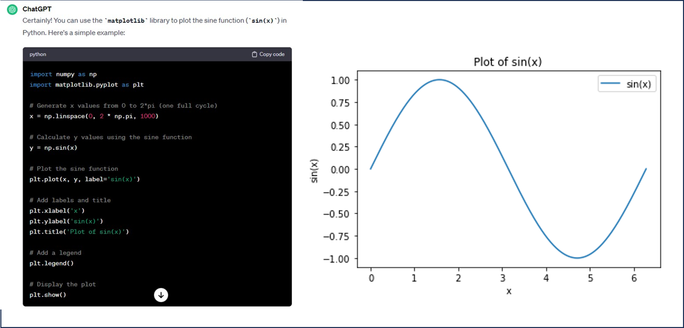
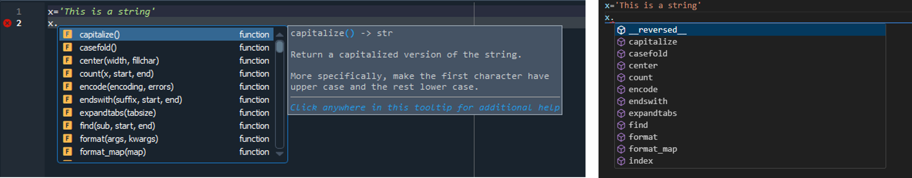
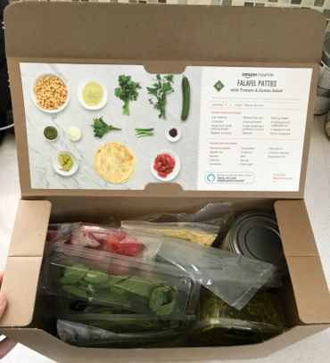

Preliminaries
University of Stavanger, Institute for Energy Resources, Norway
Dec 14, 2023
Table of contents
Is it possible to learn Python in two days?
If you never have coded before
Exercise: Install a Python library in a separate environment
Is it possible to learn Python in two days?
You will for sure not master Python in two days, but you will be able to perform many useful tasks, and lay the foundation for further development. In particular with the release of ChatGPT, I would say it has never been so easy to get advanced applications up and running with only a basic understanding of Python. If you manage to formulate what your task precisely, then ChatGPT will translate your request into code (see e.g. figure 1). This is clearly not foolproof, the code you get back might not work exactly as you want and you will need to modify it, or perhaps you have to break your task into several smaller pieces to get useful answers from ChatGPT (or the web) and then you are left with the task of gluing them together yourself.
Why should you learn coding?
A quick google search will tell you that you should learn to code because it will lead to job opportunities and boost your career. I would also highlight that it will let you test out ideas much more efficiently. When you have a lot of domain knowledge in a certain area, you will most likely have ideas that can lead to innovation or new insight. As an example, maybe you have made some observation indicating that two phenomena originally believed to be unrelated, actually are related. To prove or support you claim, you would then need to collect data from these phenomena and present them together. Since the phenomena are unrelated the data are most likely located in different places. With some basic knowledge of Python you can easily access different files, folders, web pages, scrap data from them, filter the data, and join them. Once you have collected the data you would then make some plots, and inspect the plots to discover patterns. The next steps is to quantify correlations by e.g. regression analysis or to use more advanced machine learning techniques. All this can be achieved with Python, it will take you time to master this fully, but with basic Python knowledge you can easily run through tutorials yourself and become quite advanced within weeks.
About this course
With the development of tools that can write code for you and also the large number of libraries in Python, it becomes less important to learn syntax. Rather, you should focus on learning the basic concepts, and to learn the logic of coding. For the examples presented in this course, try to focus on
- What kind of task do we want to perform?
- How can this task be broken down into smaller pieces?
- How are these smaller pieces implemented in order for the computer to understand us?
It is very important to develop an understanding on how to break a big problem into smaller tasks. In the beginning you will copy what others have done, but over time you will develop your own personal style and how to do things.
In this course we start with practical applications and gradually move to basic operations, because we hope it will be more engaging. Once we have achieved our goal or the task, we will explain the logic, and investigate line by line what is happening.
This has the consequence that we will introduce basic programming concepts such as types, lists, dictionaries when it is needed, and only the minimal amount of information. The challenge with this approach is that there is always more to learn about the basic programming concepts, thus if you feel that you would like to know more about the different concepts you should explore this on your own. See the next section for where to find resources.
Online programming resources
This course is supposed to be self contained, but there are of course plenty of online courses, youtube videos, and books that you should take advantage of to improve your understanding. These resources are extremely valuable if you know exactly what your are looking for. As a complete beginner with little or no knowledge of Python it can be confusing if you do not know what you are looking for. Great online sources that cover much of Python basics are w3schools, and A Whirlwind tour of Python. These resources explains quite briefly important concepts and give examples, such as
- specific Python syntax,
- data types (float, int, Boolean, etc.),
- data structures (lists, dictionaries, tuples, etc.),
- control flow (if, else, while, for loops etc.),
- functions and classes.
ChatGPT
ChatGPT, developed by OpenAI is perhaps one of the best online sources to help you write code. So far all the examples in this course can be generated from ChatGPT. Just type in ''Show me how to plot sin(x) in Python'', you will get the output in figure 1.
Figure 1: Output from ChatGPT and the result after running the code.

I would encourage you to use ChatGPT actively in your coding, you will be more efficient. The code generated is generally good, and if there are parts you do not understand it is possible to get additional help from ChatGPT.
Stuff you need to do
- You need to install Python, even if you have installed Python before we recommend you to install the Anaconda distribution. It is straight forward to install, just follow the instructions and choose default options that are suggested.
- Install an integrated development environment (IDE). An IDE is simply where you write the Python code. After installing Anaconda you should already have Spyder installed, if not you can install it by opening the Anaconda Navigator. You will find the Anaconda Navigator in the start menu in the Anaconda folder, but most likely there will already be a program called Spyder in your program folder. Another IDE is Visual Studio Code or VS Code for short, see figure 2 for two examples. An IDE will help you to write code, because it will give information about the code you write and also help you to find errors.
- Sign up for an account for ChatGPT. This is not mandatory, but it will help you write code faster.
Figure 2: Two IDEs to write Python code (left) Spyder (right) VS Code.

If you never have coded before
Here I have collected stuff that will make your life easier, and increase the speed of understanding. I have tried to explain some concepts below, if this is too little information there are plenty of online resources that you can check out. The purpose of this section is to introduce you to some concepts that are key to any programming language, but can take some time to master or to get under your skin. If you understand these concepts, coding will be easier. Do not focus on how we use these concepts in coding, that is what the course is all about, rather try to understand the meaning of the concepts.
Variable
Coding is very much about passing information around and do something with that information. In Python we can easily import an Excel sheet, then we typically pass the Excel sheet around in the code and do some mathematical operations on the different columns. To pass data around in our code we use variables, below are two variables called x and y
x=13
y='Dog'
We use the equal sign, =, to create a binding between what is on the left and right side. Here we have assigned the value 13 and the string Dog to x and y, respectively. The value 13 (or the string Dog) is stored somewhere in the computer memory. In many ways you can consider the operation of creating a variable as to pick a box, put something in it, and labeling it, as illustrated in figure 3.
Figure 3: A visualization of a variable.

The illustration in figure 3 also indicate that the size of the box may vary dependent on the content. Note that x and y are labels, it does not matter what kind of label we use, it is the content of the box that is important not the label you put on it. Normally you would use a more descriptive name than x or y to simply help other humans to better understand your code.
Functions
A function is several lines of code that perform a specific task. We can think of a function as a recipe, e.g. a cake recipe. To make a cake we need a certain input, eggs, flour, sugar, chocolate, then we follow a specific set of operations to produce the cake. A function in Python operates in the same way, it takes something as input (different variables), follow certain steps and returns a product (the cake).
Functions are useful because it allows us to wrap several lines of code that we believe we will use many times into reusable functions. Thus, we write the function (recipe) once and every time we want to make the same cake, we invoke the function to produce the output (cake), see figure 4.
Figure 4: My favorite chocolate fondant recipe and a Python code.

Objects and Classes
In Python everything is an object. An object is a variable (a box) that contains data and functions. That means that the boxes in figure 3 is more than just pieces of memory. To continue the with the recipe example above, we can think of an object as a cookbook that also contains ingredients, in Norwegian ''matkasse'' or in English a ''meal kit''. There will be many recipes in this meal kit and many ingredients. In Python the syntax for accessing the functions (recipes) or data (ingredients) is by using the . syntax. In figure 2, this is illustrated. When we write x='This is a string', we can e.g. do x.capitalize(), which will (not surprisingly) transform all the small letters to capital letters, 'THIS IS A STRING'.
Thus in Python there will be a lot of ready made functions that you can use to quickly perform simple operations on your variables.
Figure 5: A visualization of an object, containing functions (recipes) and variables (ingredients).

A class is a blueprint and objects are an instance of the class. We create a class by writing lines of code, to create objects we execute the code in the class. In many ways you can say that objects are physical whereas a class is logical. For the food kit case a class can be a description of the food kit on paper, describing how many recipes, how much potatoes, meat etc. should be included in each food kit, whereas all the physical food kits delivered to the customers are the objects.
Library
Python has a lot of libraries, which is one of the reasons why Python is so popular. These libraries are free and you can import them into your code. You can think of a library as a collection of cookbooks or meal kits as they also contains data. A Python library consists of a collection of objects, functions and or variables. In figure 1 two libraries are imported numpy and matplotlib.pyplot, we will return to these libraries later.
Exercise: Install a Python library in a separate environment
Hopefully you have managed to install Anaconda Python. Next, you want to open a terminal, if you are working on Linux or Mac, you open the terminal window. On Windows you open Anaconda Prompt from the Windows start menu. On my machine it looks something like this
(base) PS C:\Users\Aksel Hiorth>
The (base) to the left indicates that we are in the base environment in Anaconda, C:\Users\2902412, show me that I am at the C disk, in the Aksel Hiorth folder, which is a sub directory of the User folder.
As a general rule we do not want to install new packages or libraries in the base environment, this is simply because different packages are not always internally consistent. If you are unlucky you will install two packages that requires two different version of a third package, this will then break your installation and suddenly code that used to run will no longer work.
A good practice is for each new project you start on that requires some special packages or libraries that you have not used before is to create a new environment.
Step 1 (Update conda, if you did not recently installed Anaconda):
- Open your anaconda prompt (on Windows) and terminal (Mac or Linux)
- Make sure that conda is updated (conda is the package manager of Anaconda), by enter the following command.
(base) PS C:\Users\Aksel Hiorth>conda update -n base -c conda-forge conda
This may take some time.
Step 2 (Create environment):
- Create a new environment by the following command
(base) PS C:\Users\Aksel Hiorth>conda create -n MOD321
Here I tell python create a new environment called MOD321, which is the course code of this course. After you have accepted everything, you will get sometime like this
#
# To activate this environment, use
#
# $ conda activate MOD321
#
# To deactivate an active environment, use
#
# $ conda deactivate
- Execute the above command
(base) PS C:\Users\Aksel Hiorth>conda activate MOD321
If something goes wrong you can always delete the environment and create it once more. You simply has to deactivate it
(MOD321) PS C:\Users\Aksel Hiorth>conda deactivate
Then you delete it
(base) PS C:\Users\Aksel Hiorth>conda remove --name MOD321 --all
Step 3 (Install packages): There are several packages we will need and if we list all packages simultaneously conda will make sure that they are internally consistent. Enter the following command
(base) PS C:\Users\Aksel Hiorth>conda activate MOD321
(MOD321) PS C:\Users\Aksel Hiorth>conda install matplotlib pandas jupyter scipy numpy ipykernel pathlib numba
If you later find out you need additional packages, you just can just open a terminal window, activate the correct environment and then do conda install PACKAGE_NAME. But, as already mentioned if you install more and more very specialized packages, you might get inconsistencies. However, then you can just delete your environment and install everything once mote.
If you find a package you would like to install, the documentation may in many cases say run the command pip install PACKAGE_NAME. That may very well work, but I would always advice you to do conda install PACKAGE_NAME first, because I believe conda is better at checking for internal consistency. If conda install fails, you can do pip install and 99 out 100 times this will work out just fine.
Bibliography